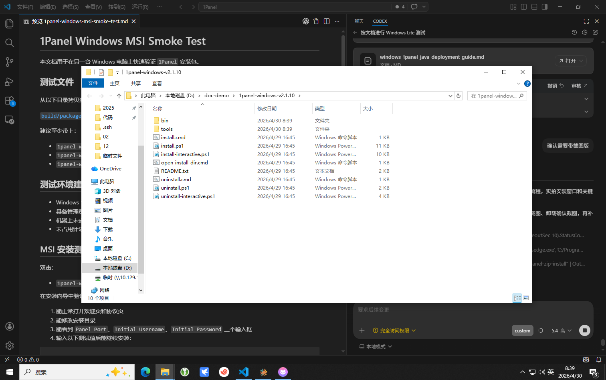
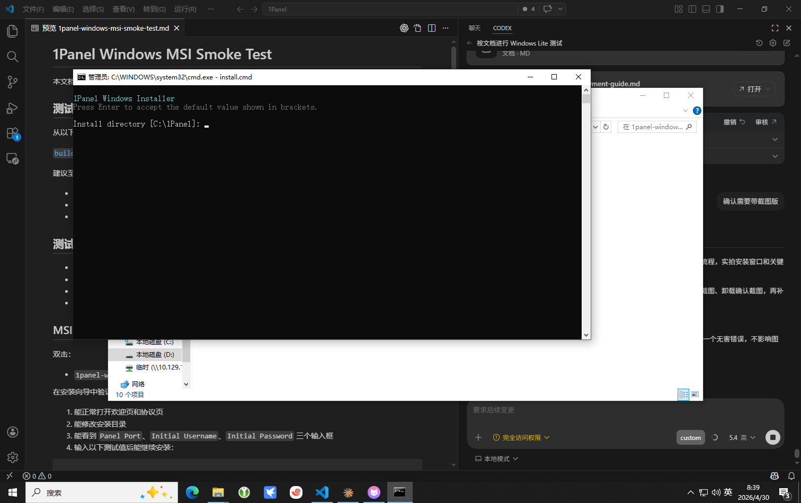
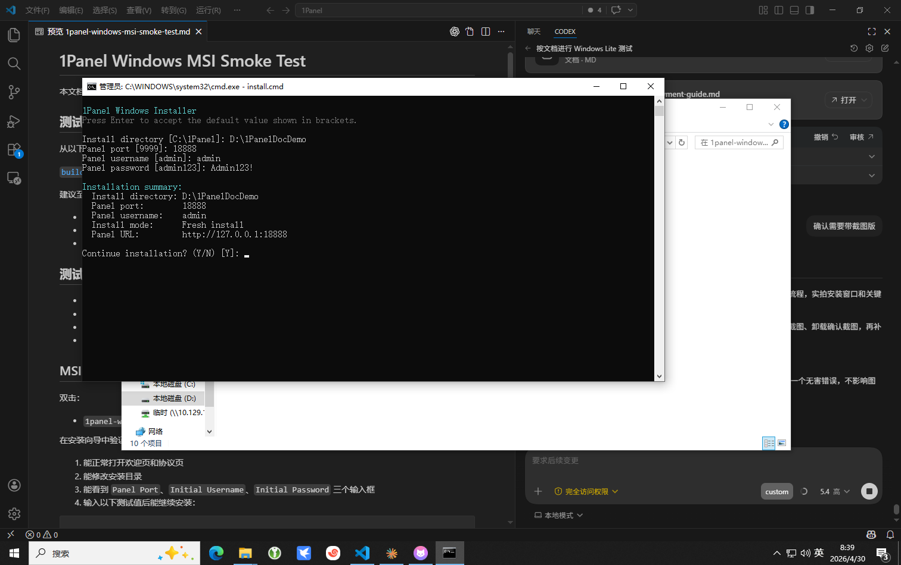
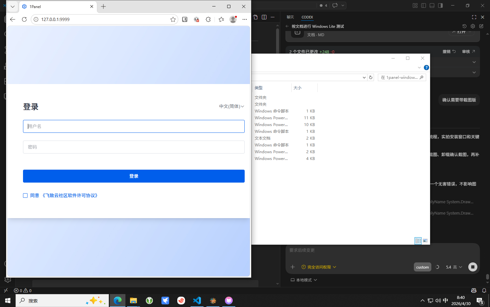
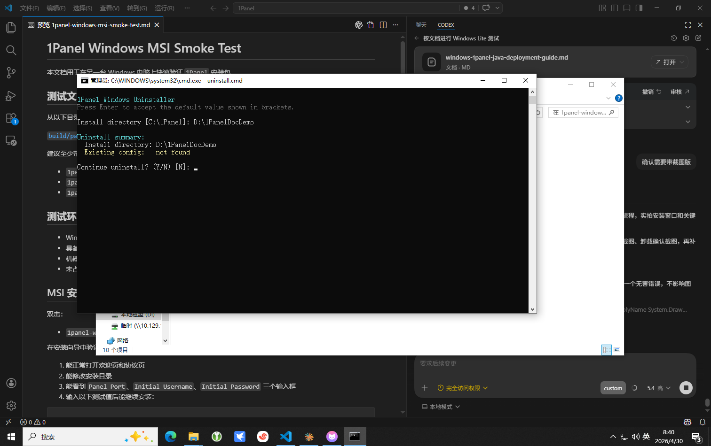

Windows 版 1Panel ZIP 安装手册（带截图）
本文档面向最终使用人员，说明如何在 Windows 电脑上通过 ZIP 安装包安装、登录和卸载 1Panel。
推荐安装包
1panel-windows-v2.1.10.zip
推荐默认值
安装目录：C:\1Panel
面板端口：9999
初始用户名：admin
交付建议
建议同时交付 ZIP 安装包和本手册。
本手册不涉及源码编译，不需要安装 Go、Node.js 或其他开发环境。
1. 解压安装包
先把 1panel-windows-v2.1.10.zip 解压到任意目录，例如：
D:\install\1panel-windows-v2.1.10
解压后可以看到这些关键文件：
install.cmdinstall-interactive.ps1install.ps1uninstall.cmduninstall-interactive.ps1uninstall.ps1open-install-dir.cmd

2. 运行安装入口
双击 install.cmd。程序会自动申请管理员权限；如果系统弹出权限确认窗口，请选择“是”。

3. 填写安装信息
安装器会依次询问：
- 安装目录
- 面板端口
- 初始用户名
- 初始密码
如果直接按回车，会使用默认值。推荐填写如下：
Install directory: C:\1Panel Panel port: 9999 Panel username: admin Panel password: Admin123!
截图中的演示值使用了测试目录和测试端口，仅用于展示：
- 安装目录：
D:\1PanelDocDemo - 端口：
18888
4. 确认安装摘要
所有信息输入完成后，安装器会显示安装摘要。请重点检查：
- 安装目录是否正确
- 端口是否正确
- 用户名是否正确
- 页面显示的访问地址是否正确
确认无误后输入 Y 继续安装。

安装过程中，程序还会继续询问：
- 是否创建桌面快捷方式
- 是否安装完成后打开浏览器
- 是否打开安装目录
建议桌面快捷方式选择 Y。
5. 登录面板
安装完成后，可以直接在浏览器中访问：
http://127.0.0.1:9999
如果安装时修改了端口，请使用实际端口访问。使用安装时填写的用户名和密码登录即可。

6. 安装完成后文件在哪里
如果使用默认目录，安装位置通常是：
C:\1Panel
常见目录：
C:\1Panel\binC:\1Panel\1panel\confC:\1Panel\serviceC:\1Panel\installer-logs
如果忘记安装目录，可以双击桌面的 1Panel Install Directory，或者运行 open-install-dir.cmd。
7. 查看安装日志
交互安装器会把安装过程日志写入：
<安装目录>\installer-logs\
例如：
C:\1Panel\installer-logs\
如果安装失败，优先查看这里的 install-*.log。
8. 卸载 1Panel
推荐双击 uninstall.cmd。卸载时会：
- 自动申请管理员权限
- 要求确认安装目录
- 停止并卸载
1panel-core-service - 停止并卸载
1panel-agent-service - 清理 1Panel 桌面快捷方式

9. 常见问题
双击 install.cmd 没反应
- 确认安装包已经完整解压
- 确认系统允许弹出管理员授权窗口
- 确认安全软件没有拦截脚本执行
浏览器打不开面板
- 确认安装已经完成
- 确认访问端口正确
- 确认服务已经正常启动
- 确认端口未被其他程序占用
忘记安装目录
- 使用桌面的
1Panel Install Directory - 运行安装目录中的
open-install-dir.cmd - 查看默认目录
C:\1Panel
10. 推荐交付内容
1panel-windows-v2.1.10.zip- 本手册
这样对方不需要了解源码仓库，也不需要自己拼命令。